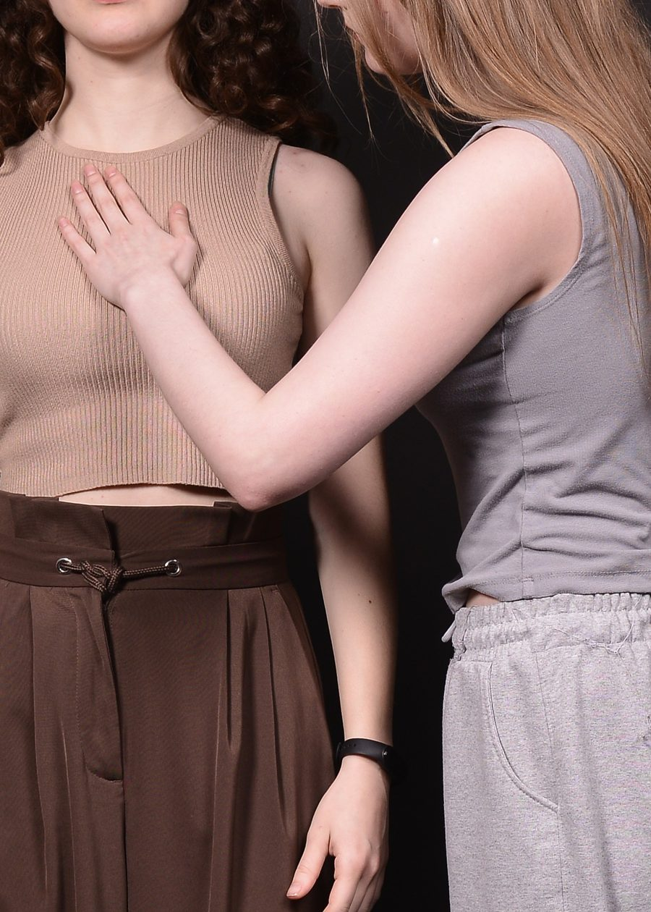
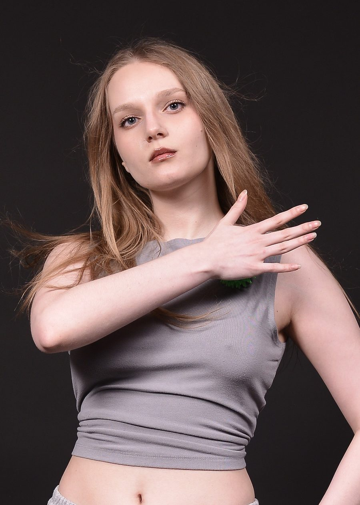

С чем ко мне приходят
- Эмоций будто нет или они приглушены: ни радости, ни злости, ни грусти.
- Ощущение, что смотришь на свою жизнь со стороны.
- Голова работает отлично, дела делаются, а внутри нет отклика.
- После долгого напряжения ничего не включается обратно.
Обычно это люди, которые много думают, хорошо справляются и не очень верят в «поговорите о детстве, и всё пройдёт». Мне это понятно, я сама так работаю: сначала разобраться, как всё устроено, потом проверять на практике.
Когда чувств не слышно, разговоров о чувствах часто недостаточно. Поэтому я работаю через тело: внимание к ощущениям, к дыханию, к тому, где именно в теле «выключено». Разговор остаётся, но тело становится ещё одним источником информации. Между встречами я даю небольшие практики и наблюдения, чтобы работа не заканчивалась на сессии.


Обо мне
В психологию я пришла из прикладной информатики. Привыкла иметь дело со сложными системами и искать, где именно что-то ломается. С людьми это работает иначе, но привычка не принимать ничего на веру осталась.
Первое время я больше занималась выгоранием. Постепенно стало ясно, что самое интересное и самое недооценённое лежит глубже: состояния, когда человек перестаёт чувствовать. Именно с ними я сейчас работаю чаще всего.
Метод, на который я опираюсь, телесно-ориентированная терапия. Я училась в рамках интегративной психологии и по-прежнему считаю, что одним методом всё не решается, поэтому подход к каждому человеку собираю отдельно.
Образование и документы
- Высшее образование: прикладная информатика
- Профессиональная переподготовка по психологии
- Обучение интегративной психологии, телесно-ориентированная терапия
Как мы можем работать
Онлайн
Индивидуальные консультации из любой точки мира. Нужны только связь и место, где вас никто не прервёт.
Очно в Ереване
Индивидуальные встречи. Для телесной работы живой формат даёт больше, но онлайн тоже работает.
Практики между встречами
В обоих форматах вы получаете небольшие практики и задания на наблюдение, чтобы замечать изменения в обычной жизни.
Чтобы записаться, напишите мне в Telegram или WhatsApp. Коротко опишите, что происходит, и мы договоримся о времени.
Контакты
Проще всего написать в мессенджер. Отвечаю лично.